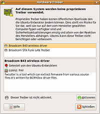

Broadcom bcm43xx
Dieser Artikel wurde für die folgenden Ubuntu-Versionen getestet:
Ubuntu 16.04 Xenial Xerus
Ubuntu 14.04 Trusty Tahr
Zum Verständnis dieses Artikels sind folgende Seiten hilfreich:
Chipsätze der Fa. Broadcom werden in viele WLAN-fähige Geräte, wie Router/Access-Points und Notebooks, eingebaut. Lange Zeit war es nur möglich, diese Chipsätze (BCM43..) über die Windows-Treiber mittels NdisWrapper in Betrieb zu nehmen. Inzwischen gibt es jedoch das b43/b43legacy-Kernelmodul  für Linux.
für Linux.
Eine Liste aller von den Kernelmodulen b43 und b43legacy unterstützten Karten findet man hier . Dieser Treiber unterstützt aber keine WLAN-Module, die über USB angebunden sind. Für diese ist weiterhin der NdisWrapper erforderlich. Weiterhin existiert ein von Broadcom entwickelter proprietärer Closed-Source-Treiber (STA-Treiber), der die Chipsätze BCM4311, BCM4312, BCM4321 und BCM4322 unterstützt.
Historisches: Mit dem Erscheinen des Kernels 2.6.24 (ab Ubuntu 8.04) wurden zwei neue einheitliche Treiber eingeführt, b43 und b43legacy , die den alten Treiber bcm43xx ersetzen. Der Grund für zwei Treiber ist, dass der b43-Treiber die Broadcom-v4-Firmware und der b43legacy-Treiber die Broadcom-v3-Firmware (ältere IEEE 802.11b-Chipsätze) unterstützt. Somit können alle Artikel, die noch den bcm43xx-Treiber erwähnen, als veraltet angesehen werden.
Installation¶
Für eine Liste unterstützter Karten und Installation der passenden Firmware siehe auch WLAN/Karten/Broadcom
Der b43/b43legacy-Treiber verwendet eine proprietäre Closed-Source-Firmware, die aus lizenzrechtlichen Gründen nicht auf dem Ubuntu-Installationsmedium mitgeliefert wird und daher separat heruntergeladen werden muss. Dies geschieht in modernen Ubuntu-Versionen über Jockey, der eine Auswahl an proprietären Treibern bietet und sich um die Installation der Treiber kümmert.
Im Ubuntu-GNOME-Menü befindet sich ein Starteintrag für die Verwaltung der proprietären Treiber (Jockey) unter "System -> Systemverwaltung -> Hardware-Treiber".
Oftmals befinden sich dort mehrere Treiber, auch für unterschiedliche Hardware, so z.B. für die Grafikkarte. In unserem Fall interessieren wir uns nur für die WLAN-Treiber, die den Broadcom-Chipsatz unterstützen. Je nach Hardware stehen häufig zwei verschiedene Treiber zur Auswahl: 
b43/b43legacy-Treiber (Open-Source-Treiber, proprietäre Closed-Source-Firmware)
STA-Treiber (auch wl- oder bcmwl-Treiber genannt, proprietärer Closed-Source-Binärtreiber)
Um einen Treiber zu installieren, setzt man einfach per Mausklick ein Häkchen bei "Aktiviert" oder klickt auf "Aktivieren". Für eine Deinstallation des Treibers muss das Häkchen entfernt oder auf "Deaktivieren" geklickt werden. Für die Erstinstallation ist ein Internetzugang über ein Ethernet-Kabel notwendig.
Ist ein Treiber installiert worden, so empfiehlt es sich Ubuntu neu zu starten, damit die Änderung wirksam wird. Anschließend kann mit Hilfe des Network-Managers ein WLAN-Netzwerk gewählt werden.
Kernel 3.0.X & 4.4.X¶
Unter Ubuntu Xenial Xerus funktioniert der von Jockey installierte Treiber bcmwl-kernel-source.
Seit Ubuntu Oneiric Ocelot ist die Kernelversion 3.0.x installiert. Die Installation des verfügbaren Treibers über Jockey bringt die eingebaute Karte nicht zum funken. Hier hilft nur die Deinstallation der "alten" Kernelmodule:
sudo apt-get purge bcmwl-kernel-source broadcom-sta-common broadcom-sta-source
und die anschließende Installation der Firmware:
sudo apt-get install b43-fwcutter firmware-b43-installer
Tipps¶
Nach der Installation eines Treibers wird der eventuell zweite vorhandene Treiber verborgen. Um ihn wieder sichtbar zu machen muss der installierte Treiber deaktiviert werden. Danach stehen wieder beide Treiber zur Auswahl.
Stehen beide Treiber zur Auswahl, so kann der andere Treiber bei Verbindungsproblemen Abhilfe schaffen. Welcher Treiber besser funktioniert, hängt vom Chipsatz und der verwendeten Ubuntu-Version ab.
Durch Installation der linux-backports-modules (compat-wireless) kann der b43/b43legacy-Treiber aktualisiert werden. Dieses Modul muss vor Verwendung des STA-Treibers deinstalliert werden.
Sollen alle in Europa erlaubten Kanäle 1-13 für Verbindungen zugelassen werden, so muss in Ubuntu Jaunty Jackalope 9.04 folgender Befehl im Terminal [1] eingegeben werden:
sudo iw reg set DE
Treten regelmäßige Verbindungsabbrüche unter b43- oder STA-Treiber auf, so kann mit folgendem Befehl Abhilfe geschaffen werden:
sudo iwconfig <interface> power off
"<interface>" muss durch den entsprechenden Interface-Namen ersetzt werden, der durch Eingabe von
iwconfig
in Erfahrung gebracht werden kann. Durch Eintragung des ersten Befehls (ohne "sudo") in die /etc/rc.local wird der Befehl bei jedem Neustart ausgeführt.
Die proprietäre Firmware kann ohne Xorg/Jockey durch die Installation des Paketes b43-fwcutter installiert werden:
sudo apt-get install b43-fwcutter
Während der Paketinstallation wird man gefragt, ob man die proprietäre Firmware automatisch aus dem Internet herunterladen möchte. Die Frage muss mit "Yes" beantwortet werden.
Probleme vor und nach der Installation¶
Welcher Chipsatz in einem Laptop eingebaut ist und ob er vom b43/b43legacy-Treiber unterstützt wird, lässt sich mit folgenden Befehl im Terminal [1] ermitteln:
lspci -vnn | grep 14e4
Dieser Befehl führt zu einer Ausgabe ähnlich wie diese hier:
10:00.0 Ethernet controller [0200]: Broadcom Corporation NetLink BCM5787M Gigabit Ethernet PCI Express [14e4:1693] (rev 02) 30:00.0 Network controller [0280]: Broadcom Corporation BCM4312 802.11a/b/g [14e4:4312] (rev 02)
In diesem Fall interessieren wir uns nur für die zweite Zeile, da es sich dabei um den PCI-WLAN-Controller handelt (die erste Zeile ist der Ethernet-Controller). Weiterhin interessieren wir uns für die PCI-ID in den hinteren eckigen Klammern (hier 14e4:4312). Ob der Controller bzw. die Karte unterstützt wird, kann hier nachgelesen werden. Ist dies der Fall, so kann davon ausgegangen werden, dass die WLAN-Karte vom b43/b43legacy-Treiber unterstützt wird.
Ist dies nicht der Fall, so bietet der Broadcom STA-Treiber, der die Chipsätze BCM4311, BCM4312, BCM4321 und BCM4322 unterstützt, eine Alternative.
Die Funktion kann mit der Eingabe von folgendem Befehl im Terminal [1] überprüft werden, der die Suche nach WLAN-Netzwerken veranlasst (Passwort notwendig):
sudo iwlist scan
Ob eine Verbindung erfolgreich aufgebaut ist, kann mit folgendem Befehl im Terminal [1] überprüft werden:
ifconfig
oder
sudo iwconfig
Um zu erkennen, welcher Treiber aktuell geladen ist, muss folgender Befehl im Terminal [1] ausgeführt werden:
lsmod
Der STA-Treiber erscheint mit dem Modulnamen wl und der b43/b43legacy-Treiber entsprechend mit b43 oder b43legacy.
Kann mit keinem der Treiber die WLAN-Karte in Betrieb genommen oder ein WLAN-Netzwerk gefunden werden, so kann das viele verschiedene Gründe haben:
Der Chipsatz ist zu neu (insbesondere IEEE 802.11n-Geräte)
Ein Hardware/Software-Schalter stellt die WLAN-Karte ab (bei vielen Notebooks vorhanden, die WLAN-Betriebsanzeige ist aus)
Ein Netzwerk-Kabel (Ethernet) ist eingesteckt (und eine BIOS-Option stellt bei eingestecktem Netzwerk-Kabel die WLAN-Karte ab)
Das Paket ndiswrapper-utils-1.9 ist installiert und das Kernelmodul ndiswrapper ist geladen (insbesondere nach einem Distributions-Upgrade)
Die Kernelmodule ssb/b43/b44 sind geladen und gleichzeitig ist der STA-Treiber installiert (da Jockey nicht beide Module automatisch entlädt)
Kann jede dieser Optionen ausgeschlossen werden, so kann nur ein erfahrener Benutzer weiterhelfen. Weitere Hilfe bekommt man im Forum.
Probleme beim Verbindungsaufbau (STA-Treiber)¶
Bei Verwendung des von Broadcom entwickelten proprietären Closed-Source STA-Treiber, der unter Ubuntu durch das Paket bcmwl-kernel-source zur Verfügung gestellt wird, kann es vorkommen, dass der Verbindungsaufbau zu einem Drahtlosnetzwerk unter Verwendung des Netzwerkmanagers (Network Manager) sehr lange dauert.
Hintergrund ist ein Fehler in der Funktion der Wireless Extensions Implementierung wl_iw_set_scan() die stets den Fehlercode 0 zurückliefert, unabhängig davon, ob das Scannen nach Drahtlosnetzwerken erfolgreich war. Die Implementierung der Wireless Configuration API ist hingegen nicht fehlerhaft. Das unter Ubuntu 12.04 verwendete Paket bcmwl-kernel-source enthält jedoch den Treiber, der unter Verwendung der Wireless Extensions API kompiliert wurde.
(Für weiterführende Informationen siehe den Blog Eintrag Why Broadcom 802.11 Linux STA driver sucks, and how to fix it von Pau Oliva Fora unter Links.)
Dieses Problem kann dadurch behoben werden, dass beim Kompilieren des Broadcom STA-Treibers in der Version 5.100.82.112 nicht WEXT (Wireless Extensions) sondern CFG80211(Wireless Configuration API) als API verwendet wird.
Hinweis: Ältere Versionen des Treibers (< 5.100.82.112) unterstützen nur den WEXT Standard.
Laut der von Broadcom mitgelieferten README.TXT-Datei, kann die beim Kompilieren zu verwendende API mit dem Kommando
make API=WEXT
für die Verwendung der Wireless Extensions oder mit
make API=CFG80211
für die Verwendung der Wireless Configuration API ausgewählt werden.
Alternativ kann das vorkompilierte Paket broadcom-sta-dkms aus dem Repository poliva/pof verwendet werden.
Hierzu muss zunächst das in den Ubuntu Repositories enthaltene Paket bcmwl-kernel-source mit dem Kommando
sudo apt-get purge bcmwl-kernel-source
entfernt werden. Das gepachte Paket kann nun mit den folgenden Kommandos intalliert werden:
sudo add-apt-repository ppa:poliva/pof sudo apt-get update sudo apt-get install broadcom-sta-dkms
Probleme und weitere Lösungsmöglichkeiten¶
Blockierung von der Hardwareseite trotz Schalter auf AN¶
Symptome¶
Der Treiber ist richtig installiert
Im Netzwerkmanager ist das WLAN inaktiv: "Funknetzwerke sind durch Hardwareschalter deaktiviert." (o.ä.)
rfkill zeigt:
rfkill list 0: ideapad_wlan: Wireless LAN Soft blocked: no Hard blocked: no 1: phy0: Wireless LAN Soft blocked: no Hard blocked: yes
Dann:
BIOS updaten
Zurücksetzen (bei Lenovo: F2 (BIOS) -> F9 -> F10)
Batterie kurz herausnehmen und wieder einsetzen
in Windows booten
WLAN anstellen
Siehe auch: Wifi disabled due to hardware switch. Not re enabling. What should i do ?
Links¶
Linux Wireless
- aktuelle Installationsanleitung für b43/b43legacy und die Firmwaredateien. Liste der unterstützten Chipsatz-Varianten.b43
- Ubuntu Community Documentation.Linux-WLAN mit b43
 - Tutorial in zwei Versionen (einfach/umfangreich), 03/2009
- Tutorial in zwei Versionen (einfach/umfangreich), 03/2009Why Broadcom 802.11 Linux STA driver sucks, and how to fix it
- Codeanalyse der Verbindungsaufbauprobleme (Broadcom STA-Treiber)
- Erstellt mit Inyoka
-
 2004 – 2017 ubuntuusers.de • Einige Rechte vorbehalten
2004 – 2017 ubuntuusers.de • Einige Rechte vorbehalten
Lizenz • Kontakt • Datenschutz • Impressum • Serverstatus -
Serverhousing gespendet von